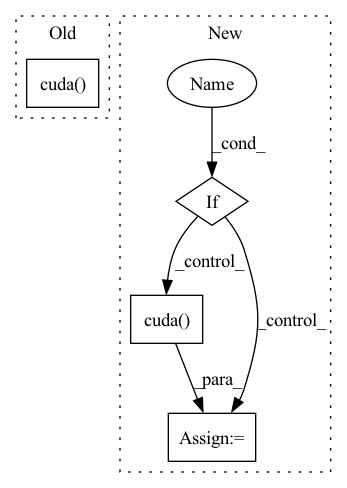

Pattern ID :3248

Before Change
dim_batch = past.size()[0]
zero_padding = torch.zeros(1, dim_batch, self.dim_embedding_key * 2).cuda()
prediction = torch.Tensor().cuda()
present_temp = past[:, -1].unsqueeze(1)
// past temporal encoding
past = torch.transpose(past, 1, 2)
After Change
zero_padding = torch.zeros(1, dim_batch, self.dim_embedding_key * 2)
prediction = torch.Tensor()
present_temp = past[:, -1].unsqueeze(1)
if self.use_cuda:
zero_padding = zero_padding.cuda()
prediction = prediction.cuda()
// past temporal encoding
past = torch.transpose(past, 1, 2)
In pattern: SUPERPATTERN
Frequency: 4
Non-data size: 4
Instances
Fragment ID: 17183110
Project Name: marchetz/mantra-cvpr20
Commit Name: a03545f44dd81448146718bbb8b1cbe089d15b8c
Time: 2020-04-30
Author: francescom394@gmail.com
File Name: models/model_controllerMem.py
M Class Name: model_controllerMem
N Class Name: model_controllerMem
M Method Name: forward(3)
N Method Name: forward(3)
M Parent Class: nn.Module
N Parent Class: nn.Module
M File Name: models/model_controllerMem.py
N File Name: models/model_controllerMem.py
M Start Line: 116
M End Line: 118
N Start Line: 119
N End Line: 128
'>
Before Change
// 下面是使用CFR
crf_model = CRF(self.num_token_type, batch_first=True)
if USE_CUDA:
crf_model = crf_model.cuda()
if not is_test:
log_likelihood = crf_model(ner_score, data_item["token_type_list"].to(torch.int64),
mask=data_item["mask_tokens"])
loss_ner = -log_likelihood
After Change
// print("hello0")
// 下面是使用CFR
if USE_CUDA:
self.crf_model = self.crf_model.cuda()
if not is_test:
log_likelihood = self.crf_model(ner_score, data_item["token_type_list"].to(torch.int64),
mask=data_item["mask_tokens"])
loss_ner = -log_likelihood
'>
Fragment ID: 17183094
Project Name: mangonihao/multiheadjointentityrelationextraction_simple
Commit Name: 3a8d46652627013ee302506e87489ee75fea8ae9
Time: 2021-03-08
Author: 2075419247@qq.com
File Name: modules/joint_model.py
M Class Name: JointModel
N Class Name: JointModel
M Method Name: forward(4)
N Method Name: forward(4)
M Parent Class: nn.Module
N Parent Class: nn.Module
M File Name: modules/joint_model.py
N File Name: modules/joint_model.py
M Start Line: 128
M End Line: 139
N Start Line: 130
N End Line: 165
'>
Before Change
dim_batch = past.size()[0]
zero_padding = torch.zeros(1, dim_batch, self.dim_embedding_key * 2).cuda()
prediction = torch.Tensor().cuda()
present = past[:, -1, :2].unsqueeze(1)
// temporal encoding for past
After Change
zero_padding = torch.zeros(1, dim_batch, self.dim_embedding_key * 2)
prediction = torch.Tensor()
present = past[:, -1, :2].unsqueeze(1)
if self.use_cuda:
zero_padding = zero_padding.cuda()
prediction = prediction.cuda()
// temporal encoding for past
past = torch.transpose(past, 1, 2)
past_embed = self.relu(self.conv_past(past))
'>
Fragment ID: 17183107
Project Name: marchetz/mantra-cvpr20
Commit Name: a03545f44dd81448146718bbb8b1cbe089d15b8c
Time: 2020-04-30
Author: francescom394@gmail.com
File Name: models/model_encdec.py
M Class Name: model_encdec
N Class Name: model_encdec
M Method Name: forward(3)
N Method Name: forward(3)
M Parent Class: nn.Module
N Parent Class: nn.Module
M File Name: models/model_encdec.py
N File Name: models/model_encdec.py
M Start Line: 69
M End Line: 71
N Start Line: 70
N End Line: 79
'>
Before Change
mol_graph, semiF_features = mol_graph
if self.args.semiF_only:
semiF_features = np.stack([features.todense() for features in semiF_features])
semiF_features = torch.from_numpy(semiF_features).float().cuda()
return semiF_features
f_atoms, f_bonds, a2b, b2a, b2revb, a_scope, b_scope = mol_graph.get_components()
After Change
if self.args.features_only:
features_batch = torch.from_numpy(np.stack(features_batch)).float()
if self.args.cuda: // can"t use next(self.parameters()).is_cuda b/c no parameters
features_batch = features_batch.cuda()
return features_batch
f_atoms, f_bonds, a2b, b2a, b2revb, a_scope, b_scope = mol_graph.get_components()
'>
Fragment ID: 17183120
Project Name: aamini/chemprop
Commit Name: b458b250cc81267ae851a68cc6917be18204ee9d
Time: 2018-10-28
Author: swansonk.14@gmail.com
File Name: mpn.py
M Class Name: MPNEncoder
N Class Name: MPNEncoder
M Method Name: forward(3)
N Method Name: forward(3)
M Parent Class: nn.Module
N Parent Class: nn.Module
M File Name: mpn.py
N File Name: mpn.py
M Start Line: 122
M End Line: 315
N Start Line: 124
N End Line: 324